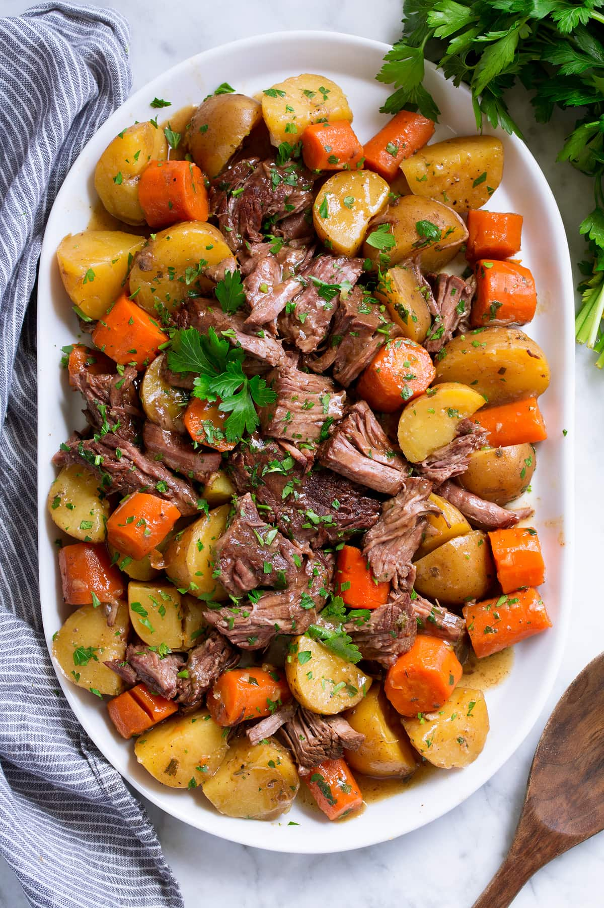

Slow Cooker Pot Roast

Description
This slow cooked roast is a delicious and easy recipe guaranteed to
satisfy everyone! This recipe is made with basic ingredients
but slow
cooked together make an unforgettable
comfort food.
Ingredients
- 1 1/2 tablespoon olive oil, divided
- 1 (3 lb) chuck roast
- Salt and freshly ground black pepper
- 1 medium yellow onion, peeled, halved and cut into thick slices
- 5 garlic cloves, minced (1 1/2 tablespoon)
- 1 1/4 cup beef broth
- 2 teaspoons Worcestershire sauce
- 1 tablespoon minced fresh thyme
- 1 tablespoon minced fresh rosemary
- 2 1/2 lbs small yukon gold potatoes, left whole
- 5 medium carrots (about 1 lb), peeled and cut into 1-inch pieces
- 2 1/2 tablespoons cornstarch mixed with 3 tablespoons beef broth, optional, for thickening gravy
- 2 tablespoons chopped fresh parsley
Steps
- Heat 1 Tbsp olive oil in a large pot over medium-high heat.
Dab roast dry with paper towels, season all over
with salt
and pepper.
- Sear roast in pot until browned on both sides, about 4 - 5
minutes per side. Transfer roast to slow cooker.
- Add remaining 1/2 Tbsp olive oil to pot. Add onion and
saute 2 minutes, add garlic and saute 30 seconds
longer.
Pour onion mixture over roast in slow cooker.
- Return pot to heat, pour in beef broth, Worcestershire,
thyme and rosemary and cook about 15 seconds, just
long
enough to scrape up browned bits from the bottom
of the
pot. Remove from heat.
- Layer potatoes and carrots over onion layer in slow cooker,
pour beef broth evenly over top then season with
salt and
pepper.
- Cover slow cooker and cook on low heat until roast and
vegetables are tender, about 8 - 9 hours.
- Remove roast and vegetables, shred roast (discard fat) and
cut potatoes if desired.
- If you'd like to thicken the broth and make a gravy, pour
broth from slow cooker through a fine mesh
strainer into a
small saucepan. Heat over medium-high heat.
Whisk
cornstarch with 3 Tbsp beef broth then
pour into saucepan.
Bring to a simmer, stirring constantly,
let simmer 30 - 60
seconds.
- Plate roast and vegetables, pour gravy over the top and
sprinkle with parsley.